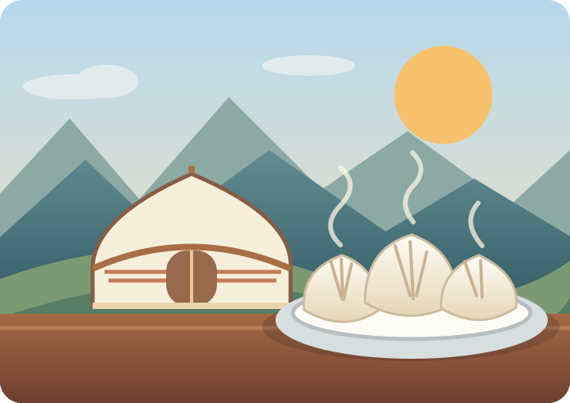

Нүүр / Соёлын танилцуулга
ХООЛНЫ СОЁЛ
Монгол нүүдэлчдийн хоолны соёл
Ахуй амьдрал, байгаль дэлхийтэйгээ зохицон ирсэн уламжлалт идэш ууш.
Цагаан идээнээс шөлөн хоол хүртэл
Монголчууд улирлын онцлогтоо тохируулан зун, намар цагаан идээ, өвөл, хавар мах заглан хэрэглэж ирсэн баялаг соёлтой.
- Уламжлал — Байгалийн цаг ууртай зохицсон амьдралын хэв маяг.
- Идэш ууш — Мах, сүү, тариа буудайн зохистой хэрэглээ.
